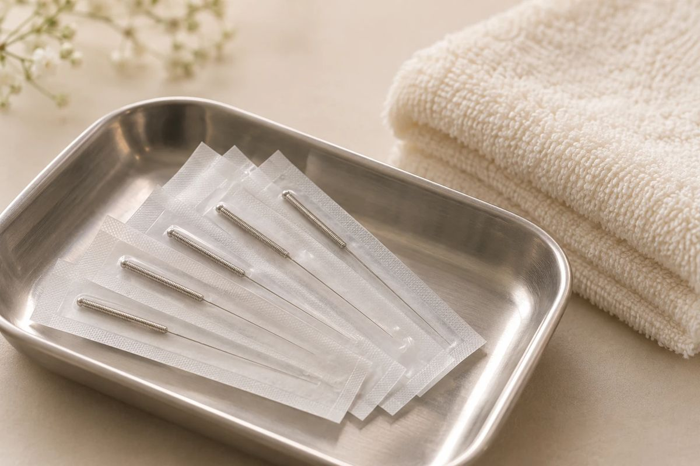
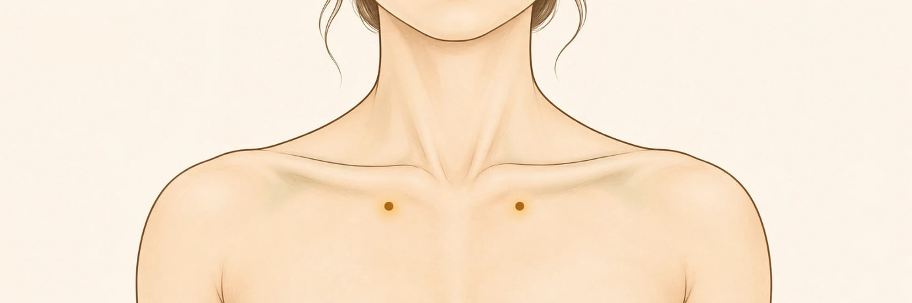

Thursday19Nov 2026
Online workshop
Acupressure for Seasonal Stress
Learn five acupressure points and a simple breathing practice you can use anywhere, any time stress builds. Take home guide included.
The Rebuild Path Acupuncture
Traditional Chinese Medicine with Amber Smith, L.Ac., licensed acupuncturist and NCBAHM Certified Diplomate in Acupuncture.

What is acupuncture?
Acupuncture is one of the oldest parts of Traditional Chinese Medicine. Fine, sterile, single use needles, about the width of a hair, are placed at specific points on the body and left in while you rest.
Most people feel a mild, dull heaviness or a gentle warmth around the needle, then settle in. The points follow a system developed and refined over more than two thousand years, and Traditional Chinese Medicine looks at the whole person, not just the symptom that brought you in.
What is acupressure?
Acupressure uses the same points as acupuncture, with steady, comfortable pressure from your fingertips instead of needles. Because you can do it yourself, almost anywhere, it is one of the simplest ways to bring Traditional Chinese Medicine into your daily life.
Want personal guidance? Amber offers online one on one consultations.
Online workshop

45 minutes to ground yourself, using nothing but your own hands.
No experience needed. Your class link is emailed after you register. For education purposes only.
Online workshop
Learn five acupressure points and a simple breathing practice you can use anywhere, any time stress builds. Take home guide included.
New dates are on the way. Follow along on Instagram or Facebook, or join the Skool community to hear first.